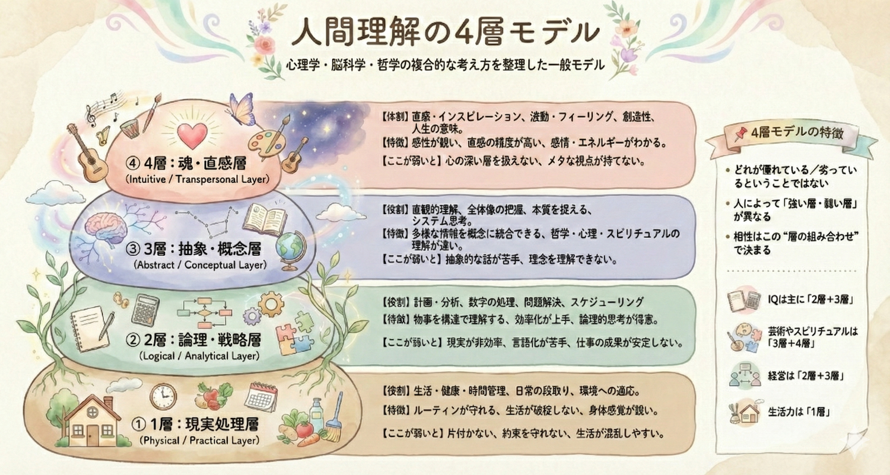

講義アーカイブ
講師：中内玲子
はじめに
今回はバレンタインデー当日の講義でした。世の中が「愛」や「感謝」を意識するこの日は、地球全体の周波数が愛で満たされています。そんなポジティブなエネルギーの中で行われた講義は、前回の「断捨離」の実践報告から始まりました。物が片付くことで現実が動き出したメンバーも増えています。
第2回は、経営者・リーダーとして**エネルギーの渦をどう大きくしていくか**、そして**自分と他者の周波数（意識レベル・脳の層）を知り、摩擦を減らして調和を生み出す方法**について、より具体的かつ実践的に学びます。
🌀 ビジネスの「エネルギーの渦」を拡大する方法
事業を立ち上げる時、創始者のパッション（原点）が最初のエネルギーとなります。しかし、その渦を継続的に大きくし続けるには、ただガムシャラに頑張るだけでは限界が来ます。
1. システムを作る（自分がいなくても回る仕組み）
渦を大きくする絶対条件は、「自分がいなくても回るシステム」を作ることです。
- 原点の人が一生懸命エネルギーを出し続ける段階から、システム自体がエネルギーを生み出す段階へ移行する必要があります。
- 例：トランプ大統領
彼は演説でパッションを示しますが、実際に行っているのは「国の巨大なシステム」をどう回すかという構築作業です。最初は断捨離（不正の排除など）から始め、次に新しいシステムを構築することに注力しています。
2. 「中心」はひとつ（王様は一人）
エネルギーの渦の原則として、中心は一つでなければなりません。中心が複数あると、渦は乱れて消滅してしまいます。
- 「50:50」のパートナーシップはうまくいかない
「君はAが得意、私はBが得意、だから50:50でやろう」というビジネスパートナーシップは、往々にして失敗します。これは渦の中心が2つできてしまい、エネルギーが分散・衝突するからです。
「王様（リーダー）」が一人いて、周りがそれぞれの役割でサポートする形が、エネルギーの法則上、最も強く安定した渦を作れます。 - Reiko先生の体験
かつては理念の共有が不十分なままスタッフを採用し、全く違う教育方針で保育されてしまい困った経験がありました。その後、「私はこう考える」という理念を言語化（本、HP、SNS）して旗を立てたところ、それに共鳴する人だけが集まるようになり、採用やチーム作りの摩擦が激減しました。
🛡 エネルギー管理と人間関係
エネルギーの原則
「エネルギーは大きい方から小さい方へ流れる」
人は無意識にエネルギーの大きい場所（人・物・場所）に集まります。これは自然の摂理です。しかし、中にはエネルギーが枯渇しており、他者から奪うことで自分を満たそうとする存在もいます。
要注意！「エネルギーのサブスク」を見直す
銀行口座の明細を見て、使っていないサブスクに気づくように、「無意識にエネルギー漏れしている相手（エネルギーバンパイア）」に気づくことが重要です。
奪う人の特徴と対策
- 「ずっと」具合が悪い・かわいそうアピール
「私ってかわいそうでしょ」と同情を引くことで、相手の関心（エネルギー）を得ようとします。
対策： 心配しすぎない。「ふーん、そうなんだ」と淡々と受け流し、エネルギーを注がないこと。 - 罪悪感を刺激する人
「あなたが〇〇してくれないから…」と、相手に罪悪感を抱かせることでコントロールしようとします。
対策： 罪悪感を持たない。「それは相手の課題」と境界線を引く。
自分に合う人の見極め方
表面的な言葉や経歴は取り繕えますが、体の感覚（エネルギー反応）は嘘をつきません。
- 会った「直後」の感覚を信じる
商談や面接の最中は気が張っていて分かりにくいですが、終わって別れた瞬間の感覚が正解です。
「あースッキリした！元気が出た！」 → ⭕️ 合う（エネルギー循環が良い）
「なんかドッと疲れた…頭が重い」 → ❌ 合わない（奪われている可能性） - 合わない人とは無理に組まない
「条件が良いから」と頭で判断して無理に組むと、後でその調整に膨大なエネルギーを費やすことになります。
💎 周波数を高める環境・外見づくり
自分の感情（高さ）には波がありますが、物質の波動は常に安定しています。環境や身につけるものを整えることで、自分の波動を底上げし、安定させる「お守り」になります。
🏡 環境（家・オフィス）
- 玄関・デスクは脳の鏡
散らかりは脳内の混乱を反映しています。特に玄関の段ボール放置はNG。段ボールは湿気だけでなく、悪い気も吸い込みます。 - 「空っぽ」より「良いもの」を置く
何もない殺風景な部屋よりも、波動の高い絵画、置物、植物（造花でも綺麗ならOK）を置く方が、空間のエネルギーは上がります。 - 場所の力を借りる
大事な商談やお茶会は、ホテルラウンジなど「場の波動が高い所」を選びましょう。その場にいるだけで自分の周波数も引き上げられます。
👗 外見・身だしなみ
- 歯のケア（口の中の断捨離）
毎日食事を通す口は、汚れや邪気が溜まりやすい場所。
フロスやプロのクリーニングは必須。Reiko先生は「口の中のスパ（マッサージ）」を受けることで、口角が上がり、顔の印象が劇的に良くなると推奨しています。 - 宝石・ジュエリー（最強のプロテクション）
ダイヤモンドは、長い年月とものすごい圧力をかけて生成されたため、波動が「高く」て「強い」です。
Reiko先生のエピソード：クルーズ旅行で「無くすと嫌だから」とダイヤを外していたら、人混みの邪気に当てられて全然回復できなかったそう。ジュエリーは単なる飾りではなく、自分を守る強力なシールドになります。 - 顔・肌（特に男性！）
眉毛：整っていないと「決断力がない」「隙がある」と見なされ、変な人が寄ってきやすくなります。
肌のツヤ・唇：カサカサだと疲れて見え、波動が低く映ります。リップクリームを塗るだけでも印象は変わります。
👂 音（聴覚）のアプローチ
- 自分の「周波数調整ソング」を持つ
YouTubeの「〇〇Hzで癒やされる」といった動画は、微妙に音がズレていることもあり、Reiko先生は逆に頭が痛くなることがあるそう。
Reiko先生のプレイリスト例：
- 天使と繋がりたい時：リベラ（少年合唱団）
- 落ち込んでいる時を吹き飛ばす時：ハレルヤ・コーラス（強制的にポジティブに！）
- 軽やかな気分の時：フレンチ・ポップ
子供を学校に送る車内など、その場の空気を変えたい時に音楽を戦略的に使いましょう。
📊 意識レベルのマップ（1〜1000）
D.R.ホーキンズ博士の「意識レベル」の表を使うと、自分や他者の現在地が客観的に分かります。これは「良い悪い」のジャッジではなく、「今どの段階（学年）にいるか」を知るための地図です。
| レベル | 意識状態 | 人類分布 |
|---|---|---|
| 700-1000 | 悟り | 0.0001%未満 |
| 600 | 平和 | 0.001% |
| 540 | 喜び | 0.01% |
| 500 | 愛 | 約0.4% |
| 400 | 理性 | 約2% |
| 350 | 受容 | 約4% |
| 310 | 意欲 | 約5% |
| 250 | 中立 | 約7% |
| 200 | 勇気 | 約10% |
| 175 | プライド | 約15% |
| 150 | 怒り | 約20% |
| 125 | 欲望 | 約30% |
| 100 | 恐怖 | 約7% |
| 75 | 悲しみ | 約1% |
| 50 | 無気力 | 約1% |
| 30 | 罪悪感 | 0.5%未満 |
| 20 | 恥 | 0.1%未満 |
各レベルの特徴
- 200（勇気）以下：フォース（Force）の領域
恐怖、怒り、欲望など、自分を守るためにエネルギーを使います。
100（恐怖）： 「失敗したらどうしよう」と常に不安。変化を恐れ、保守的。
125（欲望）： 「もっと欲しい」「足りない」という欠乏感からの執着。 - 200以上：パワー（Power）の領域
400（理性）： 科学者や分析家に多い。感情よりもロジック。「頭でっかち」になりがちで、ハート（500〜）への移行が難しい壁でもある。
500（愛）： 対立がなくなり、全てが一つにつながっている感覚。ここから奇跡が当たり前に起き始めます。
活用法
「なんであの人は攻撃的なんだろう？」と思った時、「あ、今は恐怖（100）の段階にいて、自分を守るのに必死なんだな」と理解することで、個人的に受け取らず、慈悲の目で見守ることができます。
🧠 脳の「4つの層」タイプ別診断

図解：人間理解の4層モデル
Reiko先生オリジナルの分類。自分がどの層をメインに使っているか知り、相手が得意な層の言語で話すと、コミュニケーションの摩擦ガ激減します。
第1層：現実処理層（生活・実務）
- 得意： 家事、子育て、オムツ替え、料理、日々の段取り、健康管理。
- 特徴： 地に足がついている。「今日のご飯」「子供の送り迎え」など現実的・具体的な対話が得意。
- NG行為： この層の人に、抽象的なビジョンや遠い未来の話をしても響きません。
第2層：戦略・管理層（ビジネス・論理）
- 得意： 1〜2年先の計画、分析、数字の管理、問題解決、効率化。
- 特徴： 多くの経営者やマネージャーがここをメインに使っています。「利益率」「戦略」など論理的な対話が得意。
- 弱点： ここが強すぎると、第1層（生活）がおろそかになり、「部屋が汚い」「家庭を顧みない」となりがち。
第3層：抽象・概念層（哲学・俯瞰）
- 得意： 全体像の把握、理念、ビジョン、本質的な話、宇宙法則。
- 特徴： 具体的な数字よりも「概念」や「在り方」を好む。第2層（数字）の人から見ると「ふわっとしている」と思われがち。
第4層：精神・直感層（スピリチュアル）
- 得意： インスピレーション、直感、宇宙意識との直結。
- 特徴： 理屈を超えた感覚で生きている天才肌。数は少ない。
💡 実践アドバイス：
「相手の得意な層に合わせてチャンネルを変える」ことがカギです。
Reiko先生の例： 先生自身は第2層（ビジネス）が得意ですが、旦那様は第1層（生活）が得意。以前はビジネスの話をして噛み合いませんでしたが、今は旦那様とは「第1層の言語（今日のご飯、子供のこと）」で話すように徹底。その結果、家庭内の摩擦がなくなり平和になったそうです。
職場でも、第1層が得意なスタッフに無理に戦略を練らせるより、実務を任せた方が才能を発揮します。適材適所の配置にも使えます。
🌌 宇宙へのオーダー方法
願いを叶える（引き寄せる）ための正しいオーダーの仕方は、ラーメン屋さんの注文と同じです。
- 具体的に指定する
❌「美味しいラーメン（いい人）ください」→ 店員（宇宙）は「美味しいって何？コッテリ？あっさり？」と困ってしまいます。
⭕️「醤油ラーメン、麺硬め、チャーシュー2枚、わかめ、コーン、ネギ少なめ」→ 条件（相手のスキル、性格、年収など）を明確に伝えます。 - 「感情」をセットにする（最重要！）
条件だけ揃っても、生理的に合わなかったり、一緒にいて苦痛では意味がありません。
オーダー票には必ず**「一緒にいて安心する」「心から楽しい」「愛おしいと感じる」といった感情の状態**も書き込みましょう。これが抜けている人が多いです。 - オーダーしたら執着しない
注文後に厨房を覗いて「ちゃんと作ってる？」「どうやって作るの？」と心配するのは野暮です。
「How（どうやって叶うか）」は宇宙の管轄。オーダーしたらリラックスして、出てくるのを楽しみに待つだけです。
Q&A ハイライト（詳細版）
🌺 Kayoさん：コラボやパートナー選びについて
Q： ビジネスチャンスはあるが、エネルギー的に違和感がある人とは組むべきか？昨年もチャンスはあったが、手を繋がなかった。自分のビジネスを大きくするにはパートナーが必要だが、その見極めが難しい。
A：エネルギーが合わないなら、絶対に組まない方がいい。
- 50:50のパートナーシップの罠： 「いいね！一緒にやろう！」と盛り上がって50:50で始めると、エネルギーの渦の中心が2つになり、結局回らなくなることがほとんどです。
- 「王様」は一人： リーダー（中心）が一人いて、周りがサポートする形が最強です。
- 発信がフィルターになる： 自分の理念や周波数を明確に言語化（本、HP、SNS等）して発信しておくと、それに共鳴した人だけが集まるようになります。「誰でもいい」状態だと、合わない人も来てしまい、選別にエネルギーを消耗します。「私はこういう思いでやっています」と旗を立てることで、自然と合う人だけが引き寄せられるようになり、とても楽になります。
🛡 水野直美さん：ネガティブな身内（母）への対応
Q： 2〜3年も「ずっと具合が悪い」と言い続ける母にエネルギーを吸われている気がする。どう関わりを変えれば、エネルギーを奪われなくなるか？
A： 「反応（餌）」を変えることで、相手の行動（学習）を変える。
- 同情はエネルギーを与えること： 「かわいそうに、大丈夫？」と心配することは、相手にエネルギーという「餌」を与えることになり、バンパイア行為を助長してしまいます。
- Reiko先生の「塩対応」実践テクニック：
ネガティブな訴え（具合悪い、死にそう等）→ 塩対応。「ふーん」「そうなんだ」「へー」とスルーする。長文の愚痴LINEなども既読スルーかスタンプのみ。
ポジティブな話題（孫の写真、服が似合う等）→ 全力で反応。「すごいね！」「素敵だね！」「その服似合う！」と大きく返す。 - 結果： お母様は「具合悪いアピールをしてもエネルギー（構ってちゃん）をもらえない」と学習し、逆に「ポジティブな話をするとエネルギーがもらえる」と気づきます。これで相手の行動パターンが自然と変わります。
💜 伊田恭子さん：アドバイスに反論してくる人への対応
Q： 健康のアドバイスを良かれと思って伝えても、勉強熱心なクライアントから猛反論されることがある。その勢いに押されて黙ってしまうが、どう接すればいいか？
A： 「そっとしておく」のが正解。戦わなくていい。
- 反論＝恐怖の裏返し： 猛反論してくる人は、意識レベルマップでいう「恐怖（100）」や「プライド（175）」の領域にいることが多いです。彼らは図星を突かれたり、自分の正しさが揺らぐことに恐怖を感じ、自己防衛のために攻撃（反論）してきています。
- レベルが高い人の反応： 意識レベルが高い（受容など）人は、違う意見を聞いても「あなたはそう思うんですね、私はこう思います」と違いを受け入れられるので、攻撃的にはなりません。
- 心構え： 「あ、今この人は一生懸命自分を守ろうとしてるんだな（恐怖の中にいるんだな）」と俯瞰して見ることで、こちらの感情が乱されなくなります。議論で勝とうとせず、「今はそういう時期なんだ」と愛を持って見守りましょう。
次回予告
テーマ： 魂・使命・運命・宿命について
内容： 自分が地球に何をしに来たのか？過去世からの影響と、今世の目的を紐解く、よりスピリチュアルで本質的な回になります。